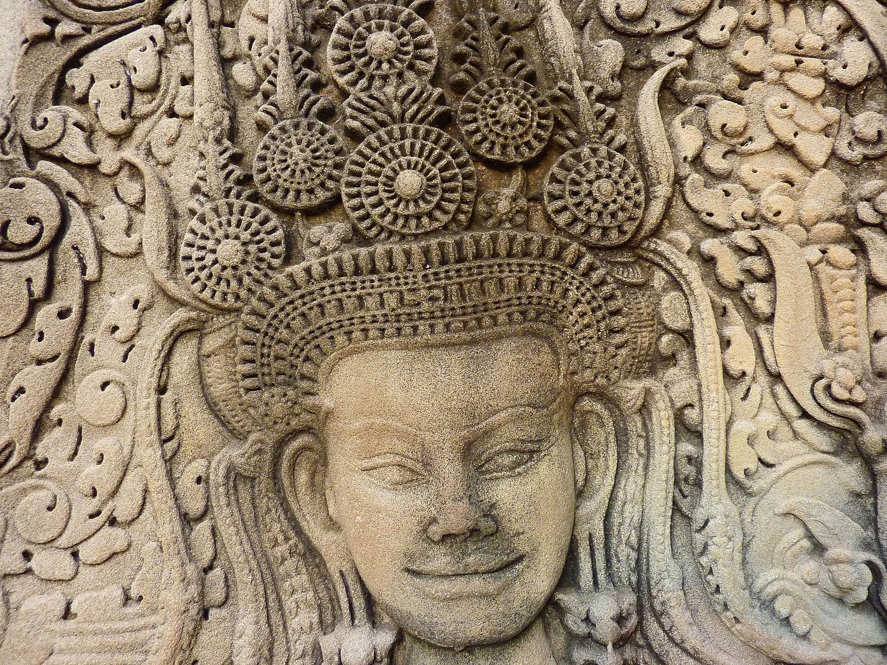

Day 4돌벽 속 무희가 걸어 나온다면 — 압사라 춤과 보카토르
오늘의 질문: 돌벽 속 압사라는 오늘의 무용수에게 동작을 물려준 걸까요, 모습을 빌려준 걸까요?읽는 시간 약 10분·문화·예술
- 압사라 춤 무용수의 의상은 앙코르와트 돌벽에 새겨진 여신들의 모습을 참고했어요 추정.
- 지금의 압사라 춤은 20세기 중반 왕실에서 다듬어졌다고 알려져 있어요 논쟁 있음. 동작이 돌에서 그대로 이어졌다는 근거는 찾기 어려워요.
- 크메르 고전 무용인 왕실 발레(2008년)와 전통 무술 보카토르(2022년)는 둘 다 유네스코 인류무형문화유산 대표 목록에 올랐어요. 앙코르와트가 오른 세계유산 목록과는 달라요.
표시가 없는 숫자는 확인된 값이에요. 자료마다 다르거나 어림한 값에만 추정·논쟁 있음을 붙였어요.
어제 퀴즈 정답 1번 X · 2번 ② · 3번은 단톡방에서 이야기해요
카드로 보기
카드를 누르면 크게 볼 수 있어요.


돌벽 속 여신들
막이 오르고 무용수들이 천천히 무대로 걸어 나와요. 머리에 쓴 장식과 몸에 두른 옷이 어딘가 낯익어요. 어디서 봤을까요? 바로 앙코르와트의 돌벽 속 여신들이에요.
돌벽에 새겨진 여신들은 흔히 압사라라고 불려요. 압사라는 힌두교와 불교 신화에 나오는 하늘의 춤꾼, 구름과 물의 존재예요. 캄보디아에서는 사원 벽과 공연 무대에서 지금도 이어지는 이야기이고요.
앙코르 시대 사원 벽에는 이런 여신을 새긴 부조(돌 표면을 깎아 형상이 도드라지게 만든 조각)가 아주 많아요 추정. 한 연구자가 앙코르와트 한 곳의 여신상을 세어 보니, 높은 탑 위쪽을 빼고도 약 1,800점이었다고 해요 추정. 하루에 100점씩 들여다봐도 18일쯤 걸리는 수예요.
압사라일까, 데바타일까
관광 안내에서는 사원 벽의 여신상을 흔히 압사라라고 불러요. 그런데 연구자들은 춤추거나 막 춤출 듯한 모습을 압사라, 정면을 보고 가만히 선 모습을 데바타(devata)라고 나눠 부르기도 해요 추정. 어느 쪽이든 앙코르와트 벽에서 만나는 여신상이에요.
아래 그림 1의 여신상은 춤추는 자세가 아니라 정면을 바라보고 있어서, 이 구분대로라면 데바타예요. 꽃 모양 장식이 얹힌 높은 관을 눈여겨보세요.

앙코르 유적의 보존과 관리를 맡은 정부기관 이름도 압사라청(APSARA National Authority)이에요. 춤과는 이름만 같은 기관이에요.
돌에서 빌린 옷, 왕실에서 다듬은 춤
그럼 무용수들은 돌 속 여신에게 동작까지 물려받았을까요? 의상은 앙코르와트 부조 속 모습을 참고했다고 해요 추정. 하지만 동작이 부조에서 그대로 이어졌다는 근거는 찾기 어려워요. 앙코르 시대에 사람들이 어떻게 춤췄는지는 알려진 것이 많지 않다고 해요 추정.
오늘 우리가 보는 압사라 춤은 1950년대 후반부터 1960년대 초 사이에 시소왓 코사막 왕비의 후원 아래 다듬어졌다고 알려져 있어요 논쟁 있음. 캄보디아 문화예술부 연구위원회가 펴낸 책의 소개에 따르면, 1958년 한 학교에서 새 압사라 춤을 만들어 공연했고 왕비가 이를 궁으로 불러 새롭게 발전시켰어요. 창작 시기와 공로자는 자료마다 조금씩 달라요.
코사막 왕비의 손녀인 노로돔 부파 데비 공주는 현대의 첫 전문 압사라 무용수로 꼽혀요 추정. 크메르 고전 무용 전체를 흔히 '압사라 춤'이라 부르지만, 엄밀한 압사라 춤은 왕실 발레(Royal Ballet of Cambodia, 왕실에서 이어 온 크메르 고전 무용) 가운데 20세기 중반에 정리된 한 작품이에요 추정.
정리하면 오늘의 질문에 이렇게 답할 수 있어요. 돌 속 여신이 오늘의 무용수에게 동작까지 물려줬는지는 알려진 것이 없고, 모습은 옷차림에 빌려준 흔적이 있어요. 그 모습에 어울리는 춤은 20세기 중반에 왕실의 사람들이 다시 다듬었다고 알려져 있어요 논쟁 있음.
손끝으로 그리는 꽃과 잎
무용수의 동작 양식을 크발(kbach)이라고 불러요. 그중 손끝은 꽃이나 잎, 줄기 같은 자연의 모습을 나타내는 말처럼 쓰인다고 해요 추정. 공연을 보게 되면 무용수의 손끝을 따라가 보세요.
사라질 뻔한 전통, 다시 모은 사람들
이렇게 다듬은 춤도 큰 위기를 맞았어요. 1975년부터 1979년까지 크메르루주(이 시기 캄보디아를 다스린 정권) 통치 아래 많은 명인 무용수와 음악가가 목숨을 잃었어요 추정. 유네스코는 왕실 발레가 이때 사실상 사라질 지경이었다고 적어요. 이 시기 이야기는 뒤 회차에서 차분히 다룰게요.
전통을 다시 이은 건 살아남은 사람들이었어요. AFP(프랑스 통신사)가 만난 78세 무용수 페뉘 욤은 크메르루주 시기에 직업을 숨긴 채 살아남았고, 여덟 살 때 왕궁에서 춤을 배우기 시작했다고 말해요 추정.
왕실 발레는 2003년 유네스코가 처음 선포했고, 2008년 인류무형문화유산 대표 목록(춤·무술·의례처럼 사람에게서 사람으로 이어지는 전통을 올리는 유네스코 목록)에 올랐어요. 앙코르와트가 오른 세계유산 목록과는 다른 목록이에요. 유네스코는 이 춤이 신성하고 상징적인 역할을 지니며, 세련됨과 존중과 영성의 가치를 담는다고 소개해요.
사자를 때린다는 이름, 보카토르
이번엔 돌벽 속 다른 장면으로 가 볼까요. 앙코르 사원의 낮은 벽에는 맞붙어 싸우는 듯한 장면이 작게 새겨져 있어요. 압사라청 관계자들은 이를 보카토르 같은 전통 무술의 모습이라고 설명해요. 하지만 부조에 보카토르라는 이름이 적혀 있는 것은 아니에요.
같은 기관의 한 고고학자는 타프롬의 한 장면을 쿤크메르(크메르 전통 무예)로 보고, 기사를 쓴 기자는 싸움보다 훈련 장면일 수 있다고 덧붙였어요 논쟁 있음.
보카토르(ល្បុក្កតោ, 르복까따오. 한글 발음은 근사치예요. 유네스코 공식 표기는 Kun Lbokator)는 맨손 격투와 바닥 기술, 무기를 함께 쓰는 캄보디아의 전통 무술이에요 추정. 이름은 '사자를 때린다'는 뜻으로 풀이된다는 설명이 흔히 전해지지만, 이 풀이를 단단히 뒷받침하는 자료는 확인하지 못했어요 추정. 사자를 쓰러뜨렸다는 전사 이야기도 전설로 전해지고요.
유네스코 소개문은 이 무술이 1세기까지 거슬러 올라간다고 적어요. 다만 그 연대를 보여 주는 기록이 있는지는 우리 제작팀이 확인하지 못했어요 논쟁 있음. 유네스코는 보카토르를 체력과 자제력을 기르고, 자연과 이웃을 존중하는 법도 가르치는 무술로 소개해요. 지역 신께 올리는 의례에서 춤·음악·전통 의학과 함께 지금도 이어진다고 하고요.
오늘의 보카토르를 되살린 스승으로는 산 킴 션(1945~2025)이 꼽혀요. 전쟁 뒤 흩어진 보카토르를 다시 모으고 가르친 스승으로 알려져 있어요 추정. 그는 2025년 6월 80세로 세상을 떠났고, 보카토르는 그보다 앞선 2022년 유네스코 인류무형문화유산 대표 목록에 올랐어요.
우리에게도 있는 이야기, 택견
우리에게도 닮은 이야기가 있어요. 택견은 일제강점기에 설 자리를 잃었지만 끊기지 않고 드러나지 않게 전해졌고, 1960~70년대에 송덕기·신한승 같은 이들을 중심으로 되살아났어요 추정. 그리고 2011년 유네스코 인류무형문화유산 대표 목록에 올랐어요.
다만 이유와 과정은 달라요. 택견은 식민 통치 아래 밀려나 숨어서 이어졌고, 캄보디아의 춤은 크메르루주 시기 많은 예술가를 잃은 뒤 살아남은 사람들이 다시 모았으며, 보카토르는 전쟁 뒤 흩어진 것을 스승들이 다시 모았어요. 어느 한쪽을 기준으로 삼자는 게 아니라, 낯선 이야기를 이해하는 다리로 빌려 온 비유예요.
| 항목 | 내용 | 확신도 | 출처 |
|---|---|---|---|
| 앙코르와트 여신상 수 | 약 1,800점(한 연구자의 조사, 높은 탑 위쪽 제외) | 추정 | devata.org |
| 압사라 춤 의상 | 앙코르와트 부조 속 모습을 참고 | 추정 | Into Cambodia, Angkor Database |
| 오늘의 압사라 춤 | 20세기 중반(1950년대 후반~1960년대 초), 코사막 왕비 후원. 1958년 학교 공연 기록도 있음 | 논쟁 있음 | Angkor Database, Cambodianess, Into Cambodia |
| 크메르루주 시기 | 1975~1979년. 많은 명인 무용수·음악가가 목숨을 잃음. 유네스코: 왕실 발레가 사실상 사라질 지경 | 희생 규모 추정, 유네스코 서술 확실 | AFP(Taipei Times), UNESCO |
| 왕실 발레 | 2003년 유네스코가 처음 선포, 2008년 인류무형문화유산 대표 목록 | 확실 | UNESCO |
| 보카토르 | 2022년 인류무형문화유산 대표 목록(공식 표기 Kun Lbokator) | 확실 | UNESCO |
| 보카토르의 기원 | 유네스코 소개문은 1세기까지 거슬러 올라간다고 적음. 이를 보여 주는 기록은 확인 못 함 | 논쟁 있음 | UNESCO |
| 산 킴 션 | 1945~2025(2025년 6월 3일 80세로 별세) | 확실 | Cambodianess 2025 |
| 택견 | 2011년 인류무형문화유산 대표 목록. 1960~70년대에 되살아남 | 등재 확실, 되살린 시기 추정 | UNESCO, 한국민족문화대백과 |
| 연도 | 일 |
|---|---|
| 앙코르 시대 | 사원 벽에 여신상 부조가 새겨짐(이 시대 이야기는 Day 5에서) |
| 1950년대 후반~1960년대 초 | 코사막 왕비의 후원 아래 압사라 춤이 다듬어짐(1958년 학교 공연 기록 포함) 논쟁 있음 |
| 1975~1979 | 크메르루주 통치. 많은 명인 무용수·음악가가 목숨을 잃음 추정 |
| 2003 · 2008 | 유네스코가 왕실 발레를 처음 선포 · 인류무형문화유산 대표 목록에 오름 |
| 2022 | 보카토르, 인류무형문화유산 대표 목록에 오름 |
| 2025 | 보카토르를 되살린 스승 산 킴 션 별세 |
프놈펜에서 만나면
- 오늘 바로: 사진 속 여신상 나눠 보기. 그림 1이나 앙코르와트 사진을 열고, 춤추는 듯한 모습(압사라)과 정면으로 선 모습(데바타)을 찾아보세요. 찾은 사진을 단톡방에 올려 서로 맞혀 봐도 좋아요.
- 공연이나 사원 부조 앞에서는 눈으로 감상하기. 사원의 부조는 캄보디아 사람들이 믿고 아끼는 존재를 새긴 것이에요. 우리가 사찰의 불상 앞에서 조심하듯 단정한 차림으로 눈으로 보고, 공연장에서는 사진 촬영 안내를 따라 주세요. 공연과 수련 일정은 바뀔 수 있으니 가기 전에 공식 안내를 확인하세요. 우리 제작팀의 권고예요.
- "천 년 전통"이라는 말을 들으면 귀 기울이기. 현지 분이 이 춤을 앙코르 시대부터 이어진 자랑이라고 말하면 바로잡지 말고 먼저 들어 보세요. 학자들 사이에서도 해석이 갈리는 이야기라서, 다른 설명을 만나면 "틀렸다"보다 "그렇게도 전해지는구나" 하고 들어요. 우리 제작팀의 권고예요.
오늘의 크메르어 한마디
របាំអប្សរា
robam apsara
로밤 압사라
압사라 춤. 앞의 របាំ(로밤)이 "춤, 공연"이라는 뜻이에요. 공연 안내나 프로그램에서 이 이름을 찾아보세요.
ទេព을 넣어 របាំទេពអប្សរា(Robam Tep Apsara, 로밤 떼읍 압사라)라고 적는 자료도 있어요.
철자와 한글 발음은 추정이에요. 철자는 캄보디아 문화예술부 연구위원회 책 제목과 같고, 한글은 근사 발음이에요.
오늘의 퀴즈
- OX왕실 발레와 보카토르는 앙코르와트 같은 건물이 아니라, 사람에게서 사람으로 이어지는 전통으로 유네스코 목록에 올랐어요. (O / X)
- 객관식유네스코는 보카토르를 어떤 무술로 소개할까요?
- ① 싸움에서 이기는 기술만 가르치는 무술
- ② 체력과 자제력을 기르고 자연과 이웃을 존중하는 법도 가르치는 무술
- ③ 왕궁 안에서만 배울 수 있는 무술
- ④ 앙코르 시대의 기록으로 연대가 확인된 무술
- 생각해 볼 질문정답은 없어요. 우리 곁에도 사라질 뻔했다가 다시 이어진 전통이나 습관이 있다면, 다음 세대에 무엇을 남기고 싶나요?
정답은 이 쪽 맨 끝에 있어요
더 알아보기
- 내일(Day 5): 「물 위에 세운 제국 — 앙코르와트는 왜 서쪽을 바라볼까」. 오늘 만난 여신들이 새겨진 그 사원 안으로 들어가 봐요.
- 한국어로 더 읽고 싶다면: 한국학중앙연구원, 한국민족문화대백과사전 「택견」 (KO)
- 유네스코 소개문을 직접 읽고 싶다면: UNESCO ICH, Royal Ballet of Cambodia · Kun Lbokator (EN)
- 손끝의 언어가 더 궁금하다면: devata.org, The Language of Khmer Classical Dance in Cambodia (EN)
확신도 표시 범례
- 확실 공신력 있는 출처 둘 이상이 일치하거나, 헌법·공식 통계 같은 1차 자료로 확인한 내용. 본문에서는 따로 표시하지 않고 표 1에 적었어요.
- 추정 믿을 만하지만 2차 자료나 추계에 기대고 있어, 자료나 시점에 따라 달라질 수 있는 내용
- 논쟁 있음 출처끼리 수치나 해석이 갈려 범위로 쓰거나 여러 견해를 함께 소개한 내용
퀴즈 정답
눌러서 정답 보기
1번 O. 두 전통은 앙코르와트가 오른 세계유산 목록이 아니라, 춤·무술처럼 이어지는 전통을 올리는 인류무형문화유산 대표 목록에 올랐어요. 이름이 비슷해서 헷갈리기 쉬워요. 「사라질 뻔한 전통, 다시 모은 사람들」과 「사자를 때린다는 이름, 보카토르」에 나와요.
2번 ②. 유네스코는 보카토르를 체력과 자제력을 기르고 자연과 이웃을 존중하는 법도 가르치는 무술로 소개해요. 싸움 기술로만 알려져 있으면 헷갈리기 쉬워요. 「사자를 때린다는 이름, 보카토르」에 나와요.
3번 정답 없음. 살아남은 무용수들과 산 킴 션 같은 스승이 다시 모으고 이어 갔기에 오늘의 춤과 무술이 있어요. 내 곁에서 이어 가고 싶은 것을 한 줄로 적어 보세요. 단톡방에서 이야기해 봐요.